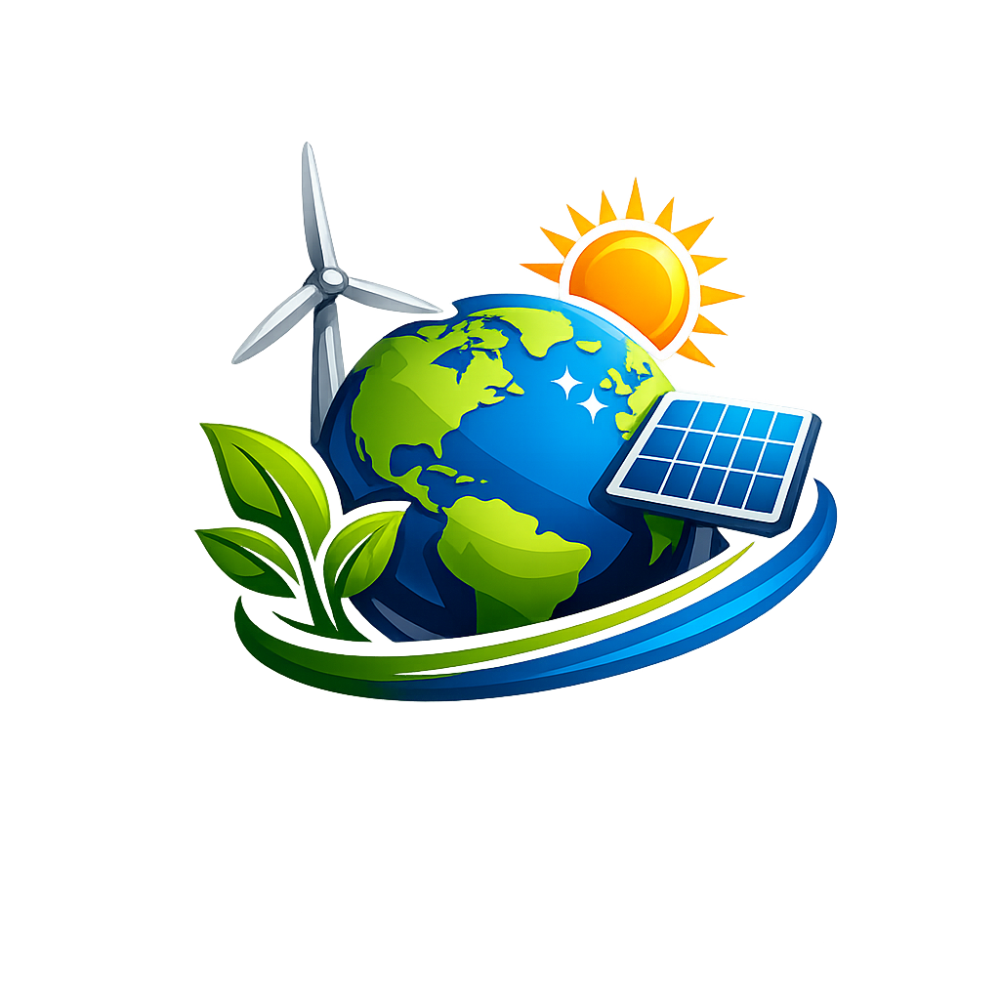

EcoFutureDiscover guides, innovations, and practical tips to reduce your carbon footprint and adopt a truly sustainable lifestyle at home and at work.
Do you have an ecological project you want to share or questions about our environmental guides?
At EcoFuture, we respect your privacy and are committed to protecting your personal data. This privacy notice will inform you as to how we look after your personal data when you visit our website.
We may collect, use, store and transfer different kinds of personal data about you which we have grouped together as follows: Identity Data, Contact Data, and Technical Data (such as your IP address or browser type).
We will only use your personal data when the law allows us to. Most commonly, we will use your personal data to provide you with the content you request and to improve our website experience.
Welcome to EcoFuture. These terms and conditions outline the rules and regulations for the use of our website.
By accessing this website we assume you accept these terms and conditions. Do not continue to use EcoFuture if you do not agree to take all of the terms and conditions stated on this page.
Unless otherwise stated, EcoFuture and/or its licensors own the intellectual property rights for all material on the site. All intellectual property rights are reserved. You may access this from EcoFuture for your own personal use subjected to restrictions set in these terms.
Welcome to EcoFuture, your premier digital destination for sustainable living and green technology insights in 2026. Our mission is to bridge the gap between complex environmental science and practical, everyday solutions for the modern home.
Founded by a diverse team of environmental engineers, mobility analysts, and sustainability activists, EcoFuture was born out of a necessity to provide verified, data-driven information in an era of rapid climate change and technological evolution.
We believe that individual actions, when powered by the right technology, can drive global change. Every guide, review, and article published on our platform undergoes a rigorous review process by experts in the field—from Laura Mendes (Environmental Engineering) to James Whitfield (Water Systems Specialist).
At EcoFuture, we don't just talk about the problem; we focus on the ROI of sustainability. Whether it's the financial benefits of solid-state batteries or the health impact of biophilic design, our goal is to help you build a lifestyle that is good for the planet and even better for your future.
Join us on the journey toward a zero-carbon world. The future is green, and it starts at home.